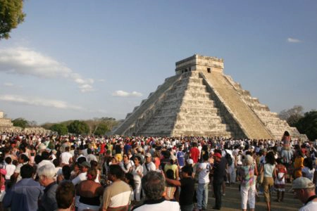
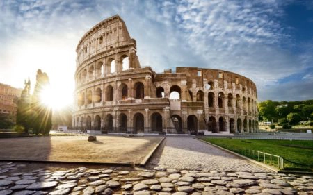

Chichén Itzá
Le Chichén Itzá est un monument maya cette fois ci et se trouve au Mexique dans le Yucatan et se site a été construit en l'honneur de la divinité Kukulcan aussi nommé le "serpent à plumes".Le monument principal de ce site est El Castillo qui est un temple à la forme pyramidale et aux 365 marches et est un des monuments les mieux préservées du Mexique.
C'est aussi un grand centre religieux du Yucatan. Il a été construit ici car il y avais aux alentours au moins cinq puits naturels qui étaient un trésor précieux à leur époque car c'était un endroit dépourvue d'eau. Même si on a découvert pas mal de choses sur son histoire une très grande partis reste incompris. De nombreuses campagnes de restauration ont été menées et la plus récentes qui date de 2011 n'a pas encore été achevé car c'est la plus ambitieuse.Un aéroport a été construit près du site afin de faciliter le transport de marchandises mais aussi faciliter l'accès aux personnes qui viennent visiter le site ou autres. Le site est séparée en deux parties une au sud appelé "Vieux Chichen" et une au nord appelé "Nouveu Chichen" ils sont séparés au sud avec des monuments plus vieux à l'aspect et le nord avec des bâtiments plus imposants.
Colisée de Rome
Le Colisée de Rome est un amphithéâtre ovoïde qui figure parmi les plus grandes œuvres architecturales du temps de l’Empire romain. Sa construction s’est faite entre 70 et 80 apr. J.-C. et quelques modifications ont été apportées au cours des deux décennies suivantes. On peut en voir la représentation sur les pièces italiennes de 5 centimes d’euro.
Il est certainement une des attractions touristiques les plus populaires, mais possède toutefois des liens avec l’Église catholique romaine. Il peut accueillir près de 50000 personnes et était un haut lieu de divertissement durant l'Empire Romain. Malheuresement le Colisée a subis de nombreux dommages à cause des tremblements de terre mais reste un des plus beaux exemples d'architectures romaines à ce jour.
Incontournable à Rome !
Si vous avez la chance de visiter un jour Rome il est absolument impossible de passer à côter du Colisée. Malheuresement les conditions de visites ne sont pas à cause du nombre énormes de visiteurs, de la chaleur mais aussi des pickpockets...
Malgré tous il reste incontournable et il faut savoir admiré ce chef-d'oueuvre d'architecture romaine malgré tout, donc pour être dans les meilleurs conditions il est préférable d'y aller en bus ou en métro,mais il est aussi incroyable d'y venir de nuit avec les éclairages nocturnes.